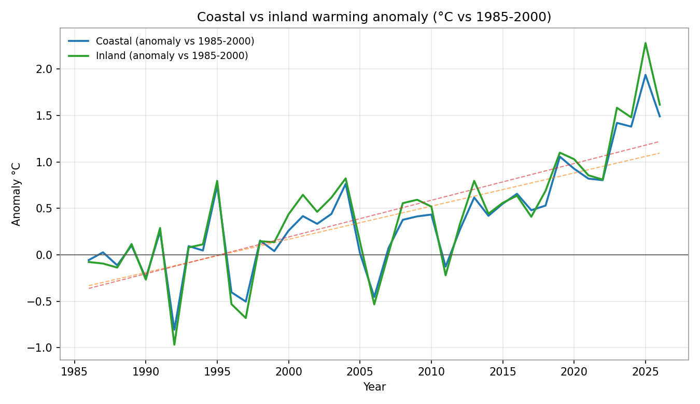
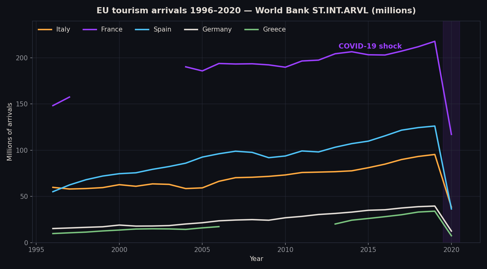

01About
The person behind the pivot tables
I graduated in Data Analysis from Università della Campania "Luigi Vanvitelli" (July 2026) with 80/100, after proving myself in professional data work. My edge: I've been on the operational side of data — supervising teams, cleaning and verifying large datasets, building reports that people actually use. I know the difference between data that looks right and data that is right.
What I bring
Advanced Excel (formulas, pivot tables, filters), a strict eye for data quality, structured reporting, and the statistical grounding from my degree — spatial regression, statistics, relational databases.
What I want
A first role as Junior Data Analyst, BI support or data-driven operational position — full-time, fixed-term or internship. I'm ready to start immediately and move anywhere in Italy or the EU.
02Skills
Tools I work with
Data & Analysis
Technical
Professional
03Thesis
Spatial regression on Campania's urban heat island
Bachelor thesis · Università della Campania "Luigi Vanvitelli" · 2026
Supervisors: Prof. Rosanna Verde & Prof. Antonio Balzanella
What I built
A complete from-global-to-local spatial analysis of summer land surface temperature across 36 Campania municipalities: OLS with full diagnostics (VIF, Breusch-Pagan, Jarque-Bera, Durbin-Watson), global and local autocorrelation (Moran's I, LISA, Getis-Ord Gi*), maximum-likelihood spatial models (SAR, SEM, SDM with effect decomposition) and local regression (GWR, MGWR) — all compared on R², AIC/BIC and leave-one-out error.
What I found
Elevation dominates: ≈ −0.41 °C per 100 m and R² ≈ 0.75. Summer heat clusters along the Naples–Salerno coastal corridor (Moran's I ≈ 0.28, p ≈ 0.004) against the cool Avellino–Benevento interior. The pipeline is fully reproducible — from real open sources (Landsat, Copernicus DEM, ERA5-Land, ISTAT/GISCO) with no geopandas or PySAL.
Honest note
Results in the submitted version are produced on a synthetic sample dataset to demonstrate the end-to-end workflow; final figures are regenerated from the real open-data sources before final submission (thesis §3.17). The pipeline, code and sample dataset are all attached below — inspect them yourself.
Research artifacts — download everything
04Projects
Things I've actually built
Real work, real data — not tutorial copies.

Campania Climate Trends (1985–2025)
Analysed 40 years of real NASA POWER climate data for six Campanian towns. Every series warms significantly (+0.33 to +0.40 °C per decade), and inland Campania is warming faster than the coast (+0.90 vs +0.83 °C). Full reproducible pipeline: fetch → clean → regress → plot.

EU Tourism Dashboard (Excel)
Professional Excel dashboard on 25 years of real World Bank tourism data for five EU countries: live KPI formulas, line and bar charts, honest insights — including the 2020 COVID shock (−60% Italy arrivals). Downloadable workbook, fully reproducible builder.
Autonomous Crypto Trading Research System
Built a complete backtesting and paper-trading system: pulled 8 years of real market data, stress-tested trend-following strategies across bull and bear markets, and deployed an autonomous paper-trading bot that trades and reports daily. The system is designed to survive crashes, not chase them.
Automated Data Pipeline — Web Scraping & Outreach
Designed and ran an automated pipeline that harvested and verified ~180 real business contacts from company websites (with deduplication and validation), then sent tailored outreach with automatic cooldown management and response detection. Scraping, API work, and process automation end to end.
Data Quality & Verification Workflows
Designed the verification workflow for a large-scale data entry operation: double-check rules, error tracking, and weekly accuracy reports that reduced rework and kept the team accountable with numbers.
Bilingual Portfolio — this site
Designed and deployed this site: automatic EN/IT language detection, GSAP motion, and a fully static GitHub Pages build with every artifact downloadable. No frameworks — just clean code, the way a data analyst would ship it.
05Path
Education, experience & more
BSc Data Analysis — 80/100
Coursework: statistics, data analysis, relational database fundamentals, data quality and reporting. Thesis on spatial regression supervised by Prof. Verde and Prof. Balzanella.
RK IT Solutions
Supervised a data entry team; performed data quality control, verification and cleaning of large datasets; prepared status reports; ensured accuracy and consistency of processed information.
Trilingual
Ready to move
Based in Caserta, Italy. Student residence permit in conversion to job-seeker permit. Fully available to relocate across Italy and the EU. Driving licence A+B.
06Contact
Let's talk data
I reply fast, I'm ready to start, and I'll bring the same attention to detail I apply to data.